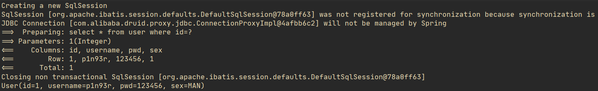

Mybatis类型转换器和别名

文章目录
注意
- mybatis不同版本可能有区别。
- 本次测试基于mybatis-spring-boot-starter，所以配置方式和spring整合mybatis不一样。
实体
User实体如下：
1 2 3 4 5 6 7 8 9 10 11 12 13 14 |
@Alias("user")
@Data
public class User implements Serializable {
private Integer id;
private String username;
private String pwd;
private SexEnum sex;
private static final long serialVersionUID = 1L;
} |
SexEnum枚举如下：
1 2 3 4 5 6 7 8 9 10 11 12 13 14 15 16 17 18 19 20 21 22 23 24 25 26 27 28 29 30 31 32 33 34 35 36 37 38 39 40 41 42 43 44 45 46 47 48 49 |
public enum SexEnum {
/**
* 男和女
*/
MAN(1,'男'),
WOMAM(0,'女');
SexEnum(Integer id,Character val){
this.id=id;
this.val=val;
}
public static SexEnum getById(Integer id){
if(null==id){
return null;
}
SexEnum[] values = SexEnum.values();
for(SexEnum v:values){
if(id.equals(v.getId())){
return v;
}
}
return null;
}
private Integer id;
private Character val;
public Integer getId() {
return id;
}
public void setId(Integer id) {
this.id = id;
}
public Character getVal() {
return val;
}
public void setVal(Character val) {
this.val = val;
}
} |
Notice: User实体的@Alias注解表明本实体类的别名为user，mapper.xml文件中可以不用写User类的全限定名称，直接使用别名即可。其实如果配置了别名扫描包，这个注解可以不用写，默认为扫描包下的实体加上别名，别名为实体类名或者其小写。
类型转换器
SexTypeHandler代码如下：
1 2 3 4 5 6 7 8 9 10 11 12 13 14 15 16 17 18 19 20 21 22 23 24 25 26 27 28 29 30 31 32 33 34 35 36 37 38 39 40 |
@MappedJdbcTypes(JdbcType.INTEGER)
@MappedTypes(SexEnum.class)
public class SexTypeHandler extends BaseTypeHandler<SexEnum> {
/**
* 设置非空性别参数
*/
@Override
public void setNonNullParameter(PreparedStatement preparedStatement, int i, SexEnum sexEnum, JdbcType jdbcType) throws SQLException {
preparedStatement.setInt(i,sexEnum.getId());
}
/**
* 通过列名读取性别
*/
@Override
public SexEnum getNullableResult(ResultSet resultSet, String s) throws SQLException {
int sexId = resultSet.getInt(s);
return SexEnum.getById(sexId);
}
/**
* 通过下标读取性别
*/
@Override
public SexEnum getNullableResult(ResultSet resultSet, int i) throws SQLException {
int sexId = resultSet.getInt(i);
return SexEnum.getById(sexId);
}
/**
* 通过存储过程读取性别
*/
@Override
public SexEnum getNullableResult(CallableStatement callableStatement, int i) throws SQLException {
int sexId = callableStatement.getInt(i);
return SexEnum.getById(sexId);
}
} |
Mybatis配置
1 2 3 4 5 |
# **********************************mybatis配置************************************* mybatis.type-aliases-package=com.example.mybatisdemo.domain mybatis.mapper-locations=classpath*:mapper/*Mapper.xml mybatis.configuration.log-impl=org.apache.ibatis.logging.stdout.StdOutImpl mybatis.type-handlers-package=com.example.mybatisdemo.typeHandler |
Notice: 这个配置是在springboot环境下的，需要导入mybatis-spring-boot-starter包以及配置数据源等。
接口编写
UserMapper.xml文件内容如下：
1 2 3 |
<select id="selectById" parameterType="Integer" resultType="user">
select * from user where id=#{param1}
</select> |
UserMapper接口如下：
1 2 3 4 |
@Repository
public interface UserMapper {
User selectById(Integer id);
} |
测试
测试代码如下：
1 2 3 4 5 |
@Test
public void test0(){
User user = userMapper.selectById(1);
System.out.println(user);
} |
测试结果如下：

文章作者 P1n93r
上次更新 2020-09-04